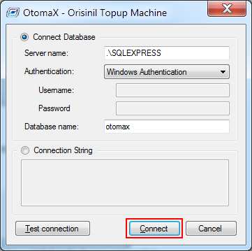
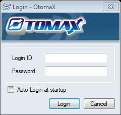
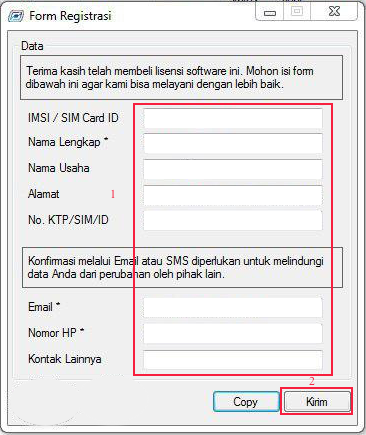
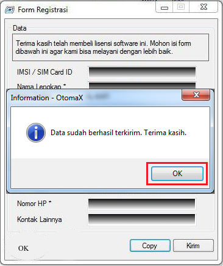
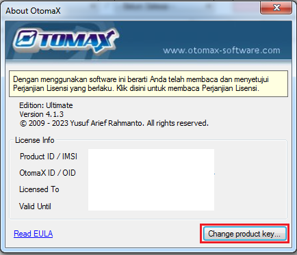
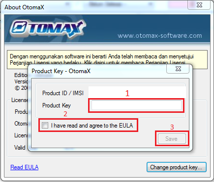
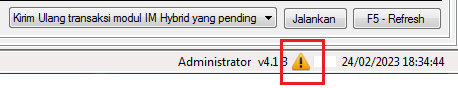
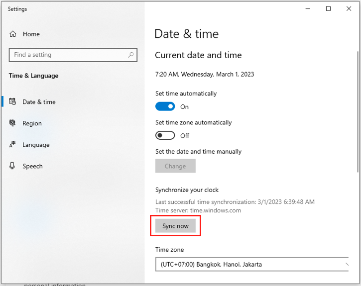

Registrasi Software OtomaX
Setelah Anda melakukan pembelian Software OtomaX disini dan mendapatkan lisensi (SN/Serial Number) beserta file-Nya, Anda perlu meregistrasikan Software Anda sebagai berikut:
- Tutup OtomaX Free Edition terlebih dahulu.
- Extract file Software OtomaX _edisi.zip yang Kami berikan, dimana edisi berisi nama edisi OtomaX, misal: _Standard.zip, _Advanced.zip dan seterusnya.
- Copy file hasil extract dan paste ke folder OtomaX (lokasi yang disediakan untuk instalasi OtomaX, lihat disini); atau ke folder lokasi instalasi OtomaX Free Edition Anda. Bila muncul jendela konfirmasi: klik Copy and Replace.
- Jalankan OtomaX sebagai Administrator (pilih OtomaX -> klik kanan -> klik Run as
Administrator)

Bila muncul seperti gambar di bawah, klik OK

Selanjutnya klik tombol Connect.

Jika muncul form login masukkan Login ID: admin, Password: admin dan klik Login.

- Tunggu beberapa saat, akan muncul
form registrasi, silahkan isi dengan data pribadi Anda. Setelah terisi semua klik tombol Kirim ->
klik OK.
Apabila form registrasi sudah ditunggu beberapa saat, namun tidak kunjung muncul, silahkan klik disini.


- Masuk menu Bantuan -> Tentang
Klik tombol Change product key

Masukkan SN (Serial Number) atau Product Key di kotak Product Key -> Centang checkbox: I have read and agree to the EULA -> Klik tombol Save.

- Registrasi selesai, OtomaX siap digunakan.
Catatan: Ketika melakukan registrasi pastikan Anda terhubung dengan internet.
Trobleshotting

Apabila di pojok kanan bawah OtomaX terdapat tanda seru seperti gambar diatas, dan ketika diklik muncul
jendela baru berisi pesan:
Cannot verify: invalid timestamp, span 387, maka lakukan sync pada Date
& Time Windows.
